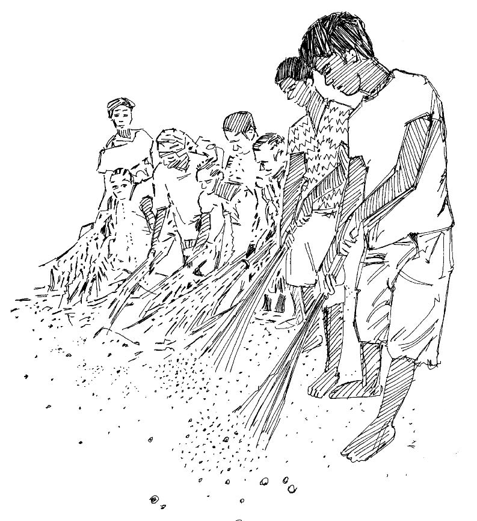
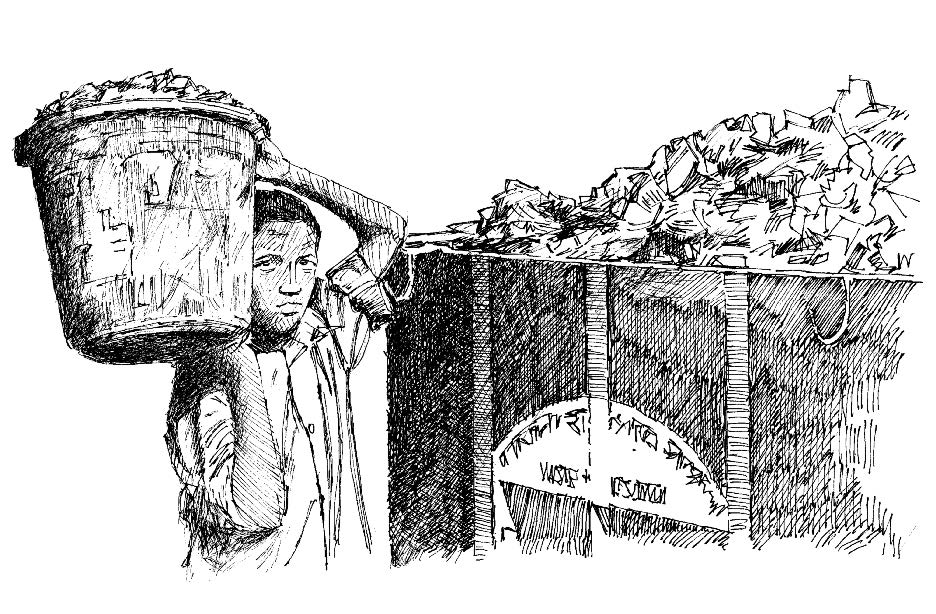

Resumen
- La basura puede atraer roedores y crear un área de reproducción para moscas y mosquitos.
- Las heces de animales cerca de las casas y del poblado aumentan el número de moscas e insectos que transportan gérmenes, causan enfermedades y contaminan las fuentes de agua.
Lo que necesita saber
- Las heces de animales alrededor de las casas y del pueblo atraen y multiplican las moscas e insectos que transportan gérmenes, que causan enfermedades y contaminan las fuentes de agua.
- Los mosquitos (que son portadores de malaria , fiebre del dengue , chikungunya , Zika y fiebre amarilla ) se reproducen en aguas estancadas.
- La basura debe ser quemada o enterrada.
- La vegetación debe ser eliminada de las orillas de los ríos y estanques cerca del pueblo.
- El área alrededor de las fuentes de agua (bombas, pozos) debe mantenerse limpia.

Dígales a los miembros de la comunidad lo importante que es mantener su comunidad limpia. Organice campañas regulares de limpieza. Incluir casas y letrinas, etc.
Lo que puede hacer
- Trabaje con los líderes tradicionales y políticos, el comité de salud del poblado y otros socios de la comunidad para decidir qué se necesita limpiar y cómo hacerlo.
- Ayude a organizar actividades en los días acordados de “limpieza”.
- Pida a los líderes de la comunidad que organicen grupos de voluntarios para cada iniciativa de limpieza.
- Organice días especiales de limpieza en los que participen todos los miembros de la comunidad (dos veces al año o más a menudo si es posible).
- Organice una iniciativa comunitaria para planificar y crear un área central de eliminación de basura.
Motive y apoye a la comunidad para trabajar juntos en:
- Mantener a la comunidad libre de excrementos animales.
- Mantener a la comunidad libre de charcos y otros criaderos de mosquitos.
- Mantener a la comunidad libre de basura y desperdicios (quemándola o enterrándola).
- Limpiar las áreas alrededor de las fuentes de agua (como bombas y pozos).
- Crear y mantener canales de drenaje de agua alrededor de las fuentes de agua.

Asegúrese de eliminar los residuos de manera adecuada. Esto ayudará a proteger a la comunidad de los gérmenes.